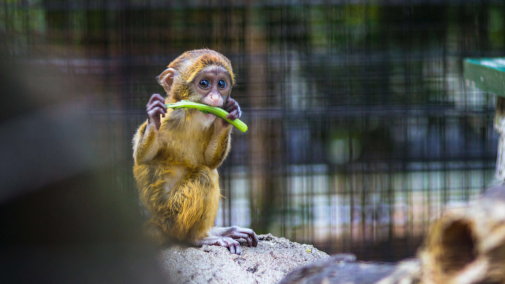

- mail infodatw@.es
- call +34 987 65 43 21
- map Calle Campo 84. Tomelloso. Ciudad Real. España


Ven y disfruta de un día de Naturaleza en en compañía
Te presentamos a nuestros animales, representantes de especies que habitan en nuestro entorno cercano y en ecosistemas más lejanos, muchas amenazadas de extinción en la naturaleza. Conoce también la rica flora de nuestro parque, árboles, arbustos, plantas y flores que dan vida y frescura a nuestros caminos e instalaciones. Cerca de 2.000 animales de más de 300 especies y 1.300 plantas de cerca de 320 especies botánicas.
Entrada General
Paris
Paris is the capital of France.
Tokyo
Tokyo is the capital of Japan.